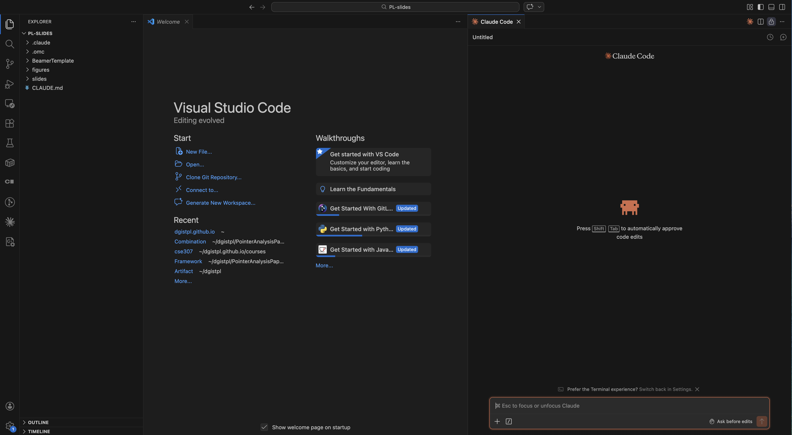

Install Visual Studio Code and the Claude Code extension to create your AI-powered learning environment.
Next: How to Use AI to Take Courses →
Make sure you have the following before you begin.
Download and install VS Code for your operating system.
Go to the VS Code website
Visit code.visualstudio.com and click the download button for your OS.
Install VS Code
macOS: Open the downloaded .dmg file and drag Visual Studio Code to your Applications folder.
Windows: Run the downloaded .exe installer and follow the setup wizard. Check "Add to PATH" when prompted.
Launch VS Code
Open Visual Studio Code from your Applications (macOS) or Start Menu (Windows) to verify it works.
Claude Code requires Node.js 18 or higher.
Download Node.js
Visit nodejs.org and download the LTS version (20 or later recommended).
Install and verify
Open the downloaded .pkg file and follow the installer. Then open Terminal and verify:
node --versionv20.x.x or higher.
Download Node.js
Visit nodejs.org and download the LTS version (20 or later recommended).
Install and verify
Run the .msi installer and follow the setup wizard. Then open Command Prompt and verify:
node --versionInstall Claude Code globally via npm.
Open your terminal
macOS: Press Cmd + Space, type Terminal, and press Enter.
Windows: Press Win, type cmd, and click Open.
Install Claude Code globally
npm install -g @anthropic-ai/claude-codesudo. Windows: Do not run Command Prompt as Administrator. Both can cause permission issues.
Authenticate
Run claude for the first time. Your browser will open for a one-time sign-in.
claudeLog in with your Claude.ai account (Pro or Max plan).
Verify the installation
claude doctorclaude doctor checks your installation type, version, and connectivity. All items should show green.
Add the Claude Code extension to Visual Studio Code.
Open VS Code
Launch Visual Studio Code on your computer.
Open the Extensions panel
Click the Extensions icon in the left sidebar, or press:
Cmd + Shift + X (macOS) / Ctrl + Shift + X (Windows)
Search for "Claude Code"
Type Claude Code in the search bar. Look for the official extension by Anthropic.
Install the extension
Click the Install button on the Claude Code extension.
Authenticate with your Claude account
After installation, open the Claude Code panel in VS Code. It will prompt you to sign in with your Claude.ai account. Your browser will open for a one-time authentication.
Log in with your Claude Pro or Max plan account.
Verify the setup
After signing in, the Claude Code panel should show a chat interface inside VS Code. You are ready to go!
After setup, VS Code with Claude Code looks like this: an editor on the left and the AI chat panel on the right.

VS Code with file explorer (left) and Claude Code chat panel (right)